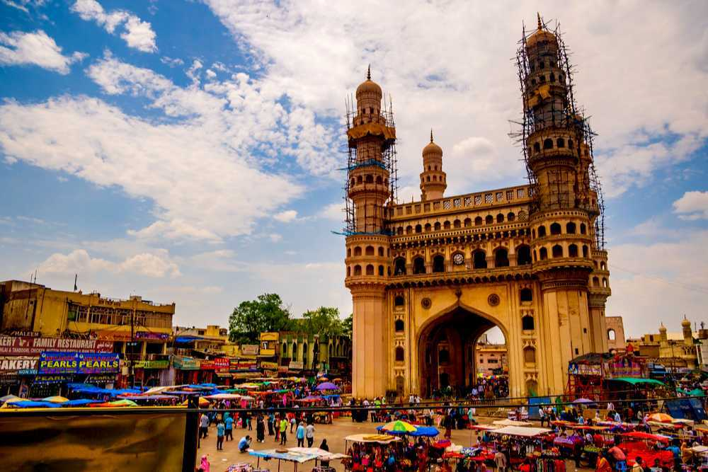
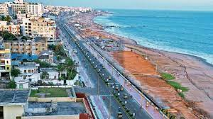
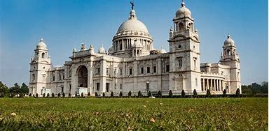
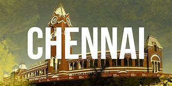
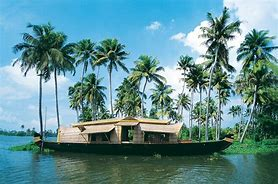
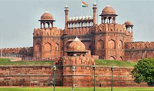

Hyderabad, India has many tourist places, including historical sites, museums, and parks. 
Visakhapatnam, city and port, northeastern Andhra Pradesh state, southern India. It lies on a small embayment of the Bay of Bengal, about 380 miles (610 km) northeast of Chennai in Tamil Nadu state. Visakhapatnam is a major commercial and administrative centre with road, rail, and air connections. Its port is the only protected harbour on the Coromandel Coast, and the city is the headquarters of the Eastern Naval Command of the Indian Navy.
Kolkata, city, capital of West Bengal state, and former capital (1772–1911) of British India. It is one of India’s largest cities and one of its major ports. The city is centred on the east bank of the Hugli (Hooghly) River, once the main channel of the Ganges (Ganga) River, about 96 miles (154 km) upstream from the head of the Bay of Bengal; there the port city developed as a point of transshipment from water to land and from river to sea. A city of commerce, transport, and manufacture, Kolkata is the dominant urban centre of eastern India.
Chennai is located on the Coromandel Coast along the Bay of Bengal. The Cooum (Koovam) River flows through its centre and the Adyar River through its southern portion. The Buckingham Canal runs parallel to the coast, joining the Kortalaiyar (Kosasthalaiyar) River in the northern edges of the city and the Muttukadu Backwaters south of the city.
Kerala, southwestern coastal state of India. It is a small state, constituting only about 1 percent of the total area of the country. Kerala stretches for about 360 miles (580 km) along the Malabar Coast, varying in width from roughly 20 to 75 miles (30 to 120 km). It is bordered by the states of Karnataka (formerly Mysore) to the north and Tamil Nadu to the east and by the Arabian Sea to the south and west; it also surrounds Mahe, a segment of the state of Puducherry, on the northwestern coast. The capital is Thiruvananthapuram (Trivandrum).
Delhi, city and national capital, and union territory, north-central India. The city of Delhi actually consists of two components: Old Delhi, in the north, the historic city; and New Delhi, in the south, since 1947 the capital of India, built in the first part of the 20th century as the capital of British India.
